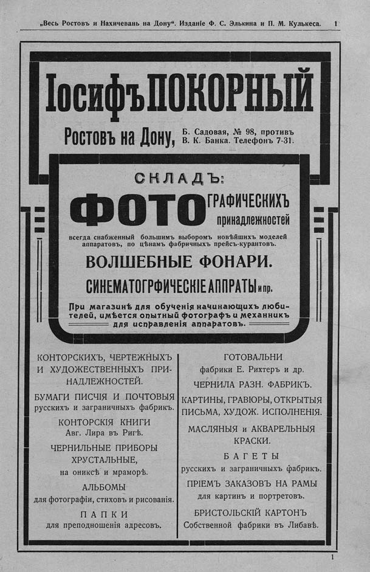

Лист источника 583
Скан

Распознанный текст
„Весь Ростовъ и Нахичевань на Дону“. Изданіе Ф. С. Элькина и П. М. Кулькеса. 1
Іосифъ ПОКОРНЫЙ
Ростовъ на Дону, Б. Садовая, № 98, противъ
В. К. Банка. Телефонъ 7-31.
СКЛАДЪ:
ФОТОГРАФИЧЕСКИХЪ
принадлежностей
всегда снабженный большимъ выборомъ новѣйшихъ моделей
аппаратовъ, по цѣнамъ фабричныхъ прейсъ-курантовъ.
ВОЛШЕБНЫЕ ФОНАРИ.
СИНЕМАТОГРФИЧЕСКІЕ АППРАТЫ и пр.
При магазинѣ для обученія начинающихъ люби-
телей, имѣется опытный фотографъ и механникъ
для исправленія аппаратовъ.
КОНТОРСКИХЪ, ЧЕРТЕЖНЫХЪ
И ХУДОЖЕСТВЕННЫХЪ ПРИ-
НАДЛЕЖНОСТЕЙ.
БУМАГИ ПИСЧІЯ И ПОЧТОВЫЯ
русскихъ и заграничныхъ фабрикъ.
КОНТОРСКІЯ КНИГИ
Авг. Лира въ Ригѣ.
ЧЕРНИЛЬНЫЕ ПРИБОРЫ
ХРУСТАЛЬНЫЕ,
на ониксѣ и мраморѣ.
АЛЬБОМЫ
для фотографіи, стиховъ и рисованія.
ПАПКИ
для преподношенія адресовъ.
ГОТОВАЛЬНИ
фабрики Е. Рихтеръ и др.
ЧЕРНИЛА РАЗН. ФАБРИКЪ.
КАРТИНЫ, ГРАВЮРЫ, ОТКРЫТЫЯ
ПИСЬМА, ХУДОЖ. ИСПОЛНЕНІЯ.
МАСЛЯНЫЯ и АКВАРЕЛЬНЫЯ
КРАСКИ.
БАГЕТЫ
русскихъ и заграничныхъ фабрикъ.
ПРІЕМЪ ЗАКАЗОВЪ НА РАМЫ
для картинъ и портретовъ.
БРИСТОЛЬСКІЙ КАРТОНЪ
Собственной фабрики въ Либавѣ.
1